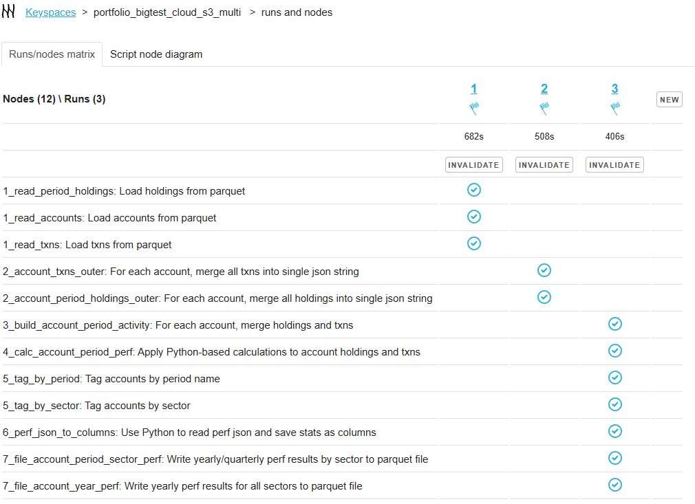

Capillaries: notes
2025-07-04
Run profiles - worker threads or writers?
A quick post. How do I choose the number of worker threads and the number of writers to achieve optimal performance? As usual, the answer is: it depends. Here are some statistics for two Portfolio test cycles that may be useful when making the decision.
This is a typical Portfolio test that looks like this from the UI:
It uses three different runs to help us building more meaninful statistics:
- Run 1: load data from files
- Run 2: perform some joins
- Run 3: perform Python-heavy calculations
The tests was performed on 4 x c6a.large Daemon instances and 4 x c5ad.2xlarge Cassandra nodes.
There were two tests:
- first test used 2 worker threads per Daemon (one worker thread per CPU), and 6 Cassandra writer thread for each worker thread
- second test used 3 worker threads per Daemon (one worker thread per CPU), and 6 Cassandra writer thread for each worker thread
Before running these two tests, I experimented with higher number of writers - 8 and 12 per worker, but the results were not very encouraging: higher number of writers made data load from file (run 1) marginally faster, and marginally down the joins part (run 2). Both at the expence of higher Daemon CPU load. So I decided to set the number of writer threads to a more conservative value of 6, or "the number of CPUs of Cassandra node multiplied ba factor 0.75". For the setup with the number of Cassandra nodes equal to the number of Daemon instances with Cassandra nodes 4x time more powerful (like large vs 2x large in this case), I believe that this 0.75 factor is a decent compromise.
The timings for two tests are as follows:
| Run | 1 | 2 | 3 | Total |
|---|---|---|---|---|
| 1 (2 workers) | 736 | 719 | 419 | 1874 |
| 2 (3 workers) | 682 | 508 | 406 | 1596 |
Load data run: increasing the number of workers from 2 to 3 made Daemons busier (85% -> 90%) and Cassandra nodes - somewhat busier (60% -> 65%), and gave us beter timing 736 -> 682.
Joins run: good increase in Cassandra load 30% -> 40% which resulted in a nice timing change 719 -> 508.
Python run: predictably, no change here - Python calculations just took 100% of Daemon CPU and put a very light load on Cassandra.
For both tests, daemon GOMEMLIMIT was set to 2GiB (half the amount of RAM), and the memory chart shows that Daemon instances never consumed more than 70% of RAM (peaks during the first run). The artefact circled in gray shows the moment when daemons hit the GOMEMLIMIT and GC kicks in, taking some extra CPU cycles - a little burst in the beginning and stable after that. This happens because we restarted Daemons before each tests. Without those restarts, that GC kick-in bump would probably go away.
Cassandra writes numbers match the CPU load chart, no surprises here.
Overall, keeping the number of writers conservative (0.75 of Cassandra CPUs per node) and the number of workers at number_of_daemon_cpus x 1.5 seems to be a decent strategy for the "cassandra_nodes = daemon_instances and cassandra_cpus = daemon_cpus x 4" setup. Will higher workers amounts result in better joins performance? Maybe, but that will come at cost of unnecessary CPU churn on data load and Python runs. And obviously, does not make sense setting the number of workers below the number of daemon CPUs.